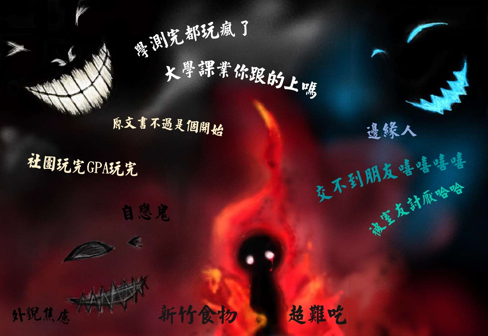

學測終於考完了！踏出考場的瞬間真的開心到快哭了，也幸好這兩天遇到的題目都不算太難，應該有好好發揮自己的能力！只能祈禱不會的都猜對，還有閱卷老師會喜歡我的新冰箱，接下來這幾天，我要和高中同學們爆吃爆玩，把這一年沒玩到的全部補回來！
緊張的考試日
- 天氣🌞 2012/01/23 -
我離夢想好近
上禮拜放榜了，幸好有如期考上清大，這裡真的是我心目中最夢幻的學校！不過…想到再過不到一個月就不能天天見到高中同學、一起開開心心上學玩耍就有點感傷，高三雖然很痛苦，但高中生活真的是我最快樂的日子！
- 天氣☁️ 2012/05/12 -
想家的我
快要開學了，不想離開家裡，媽媽做的飯最好吃了，想到以後能吃到的機會越來越少，頓時難過起來，而且不知道大學生活是什麼樣子，那裡既不是我熟悉的地方，也沒有閨蜜們，好害怕大學生活的來臨。
- 天氣🌧️ 2012/08/22 -
我不在家，鬼不要來敲門！
這幾天天氣有夠好，最適合出去玩了，可是不知道可以跟誰出去。明明我這麼美，怎麼沒有人來跟我說話。想說跟玄武也一段時間沒見了，約他一起聊天出去玩，沒想到他居然不回我訊息，連已讀都沒有，也太過分了吧，整天只會睡覺。
明天就是開學典禮了，好焦慮…昨天還做了惡夢，夢到有三個臉很可怕人一直跟我說大學很可怕

學測考完到現在都沒讀過書，想到之後會遇到很多厲害的指考生就覺得壓力好大，而且原文書感覺好難，雖然社團應該很好玩，但成績真的能顧好嗎…還有宿舍，雖然青龍說新齋蓋得不錯，但不知道會不會遇到好室友，在學校也不能吃到媽媽煮的飯，新竹的食物又聽說很難吃。而且到大學又得再重新交朋友了，真的不想當邊緣人。不知道會不會遇到比我還漂亮的人，但我還是覺得我一定最好看。
- 天氣🌞 2012/09/17 -
為什麼？
才剛開學，可是好想回家。玄武昨天真的沒有來見我，他是我在這邊最熟悉的人，除了他之外，我的煩惱不知道還可以跟誰講。旺宏的冷氣怎麼可以這麼不涼，可是外面更熱，所以還是去發呆區放空了。什麼都不想管了。
- 天氣☁️ 2012/09/18 -
Fin.
【案件進行至此也畫下了句點，可你們的人生新的一頁才正要開始】
案件發生的當年，無論是青龍、白虎、玄武，還是朱雀，都在這次的事件中看見了更堅強的自己，這段回憶對於他們來說，是在大學生涯中最難能可貴的歷程，因此他們才決定將這段故事化作一場考驗並獻給你們。 大學旅途之中也許無法一路順遂，大抵像是走著顛頗的石子路，但漫漫長路之中卻能看見溫情常駐的影子，四年中尋著覓著，找到夢想、找到未來更重要的是找到自己，祝你們能成為專屬於自己的清華人。警長
- ~ -
Fin.